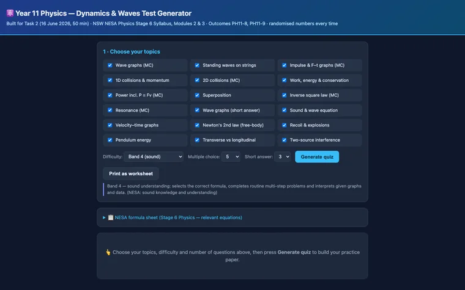

← All projects
Physics question generator
Unlimited Year 11 Physics practice questions at the level a student needs, each with a worked solution.
Designed and built independently, outside my school roles. Demonstrations use made-up data and sample AI responses.


The classroom problem
Textbooks run out of questions, and the ones they have aren't pitched at the level each student is ready for.
What it does
- Choose the topics, the difficulty (by NESA performance band) and the number of questions.
- Every question has fresh numbers and a worked solution.
- Print it as a worksheet, or use it on screen.
- Works offline, with nothing to install.
How it was built
There is no AI inside the tool. I designed it and built it with AI coding assistants, and it was tested across thousands of generated questions.
The teacher’s role: Choose the topics, difficulty and number of questions, then use the worked solutions to support practice.